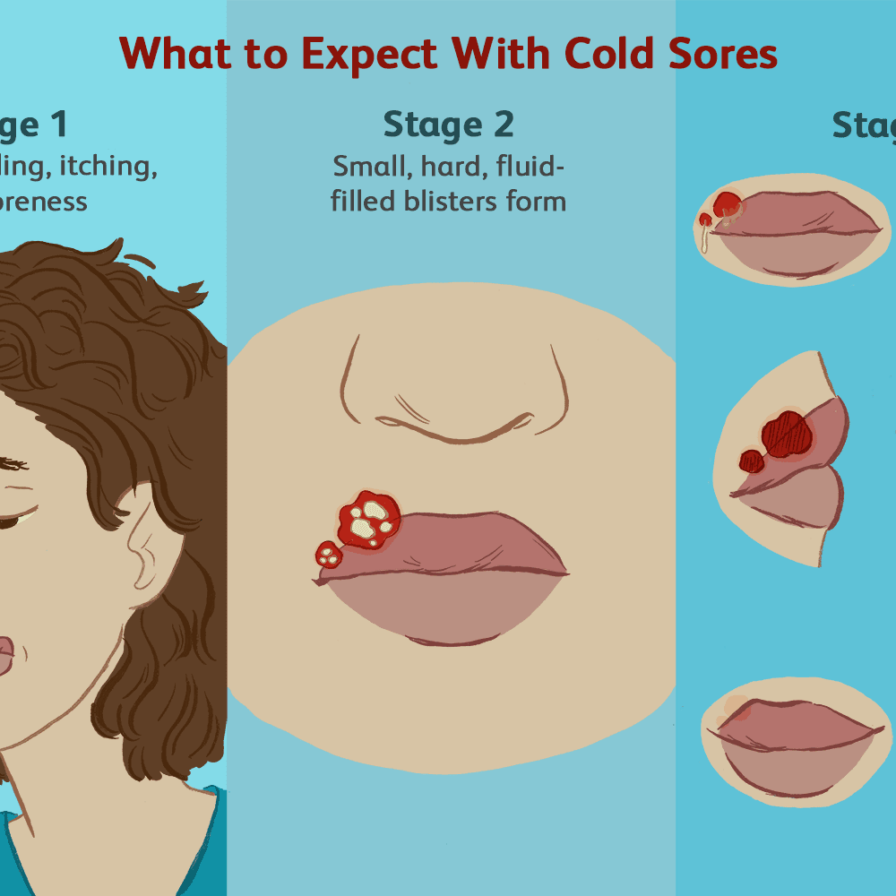

Cold sores

SYMPTOMS:
- You have a tingling, burning, or itching feeling.
-
About 12 to 24 hours later, blisters form. The area becomes red, swollen, and painful.
-
The blisters break open, and fluid comes out. This usually lasts 2 or 3 days.
-
A scab forms on the sore. It might crack or bleed.
-
The scab falls off.
CAUSES:
- Some foods
-
Stress
-
Fever
-
Colds
-
Allergies
-
Fatigue
-
Sunburn or being in strong sunlight
-
Dental work or cosmetic surgery
-
Menstruation
DIAGNOSIS:
- Your doctor might diagnose a cold sore just by looking at the blisters. They can also swab the blister and test the fluid for HSV.
Home Remedies
- Cold, damp compresses
-
Pain medicines like acetaminophen and ibuprofen
-
Cream painkillers with benzocaine or lidocaine
-
Treatments with alcohol to dry out the blisters
-
Lip balms and creams to keep moisture in